一、主要平台¶
主要都是基于在线 jupyter notebook， 收费平台都具有在线 ssh命令行界面
1.1 收费¶
（1） 潞晨云 https://cloud.luchentech.com/
价格最优。
（2） https://www.deepln.com/#/home/tabel2
在读学生可 免费使用 8G P4显卡。
（3） AutoDL https://www.autodl.com/
曾经价格最优， 使用的人最多， 有时租不到。
1.2 免费¶
国外¶
（1） google colab https://colab.research.google.com/
示例一、 https://colab.research.google.com/github/sndnyang/LearnIsFun/blob/master/educhat/TryEduchat-qwen.ipynb 使用 EduChat Qwen 1.8B 模型
示例二、 待更新
不足： 连续运行最高不能超过12小时（即使开pro/pro+)，只能用于编写和调试代码
（2） Kaggle https://kaggle.com/
每周30小时免费GPU
国内¶
（1）中国移动 九天毕昇 https://jiutian.10086.cn/edu/
直接在线 jupyter notebook 或 vscode开发， 可传输文件。
缺点：很难申请到完整的一张GPU， 基本都是虚拟化后的GPU， 速度较常规慢。
（2）OpenI 启智社区 https://openi.pcl.ac.cn/
缺点：相比别的平台， 难用， 死板， 切换配置很不方便， 调试限制4小时， 长时间训练配置麻烦。
二、 主要使用流程 （以潞晨云为例）¶
1. 注册¶
2. 登陆选卡新建主机¶
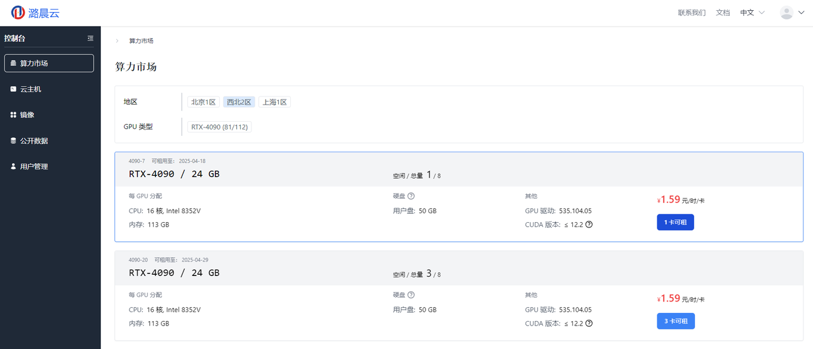
3. 镜像（默认环境）选择¶
选择 相应的计费方式
点击 选择一个镜像（建议pytorch 2.1）
充值
创建
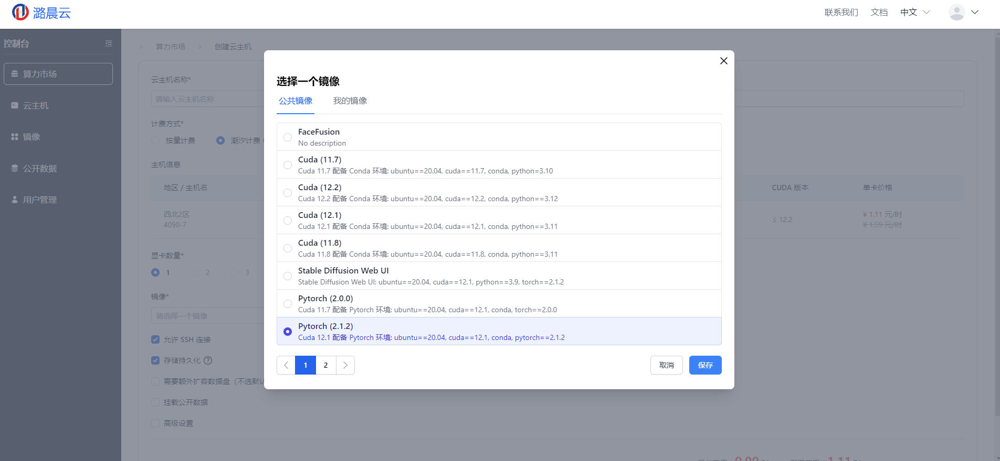
等待几分钟后
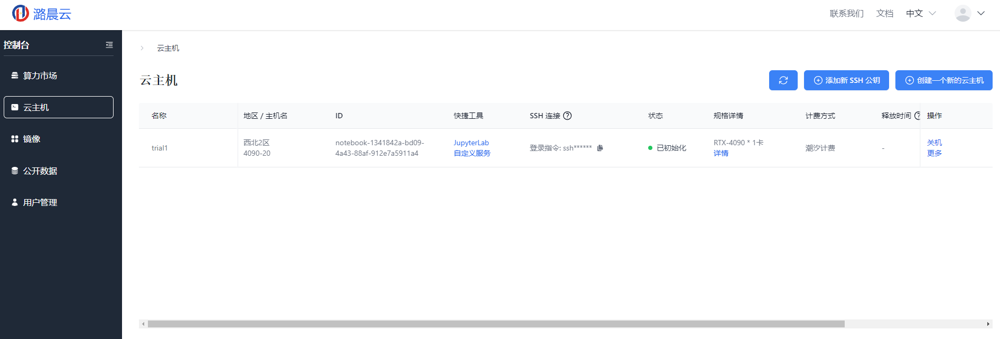
4. 配置ssh连接¶
4.1 使用jupyterLab 打开进行配置。¶
4.2 生成密钥¶
私钥在个人电脑， 公钥写入服务器 https://git-scm.com/book/zh/v2/服务器上的-Git-生成-SSH-公钥
(1) 使用任意 shell (Linux环境的shell 或 windows平台安装 git bash) 查看 ~/.ssh 文件夹
```Plain Text cd ~/.ssh ; ls
主要是看 `id_rsa.pub` 和 `id_rsa` 两个文件
(2) 若不存在 ， 使用 ssh-keygen 生成（ Linux shell 自带， git bash 也自带）， 示例：
```Plain Text
$ ssh-keygen -o
Generating public/private rsa key pair.
Enter file in which to save the key (/home/schacon/.ssh/id_rsa):
Created directory '/home/schacon/.ssh'.
Enter passphrase (empty for no passphrase):
Enter same passphrase again:
Your identification has been saved in /home/schacon/.ssh/id_rsa.
Your public key has been saved in /home/schacon/.ssh/id_rsa.pub.
The key fingerprint is:
d0:82:24:8e:d7:f1:bb:9b:33:53:96:93:49:da:9b:e3 schacon@mylaptop.local
3、4行：保存的文件名，默认即可。 5、6行：个人习惯不用。
（3）检查本地电脑生成的 ~/.ssh/id_rsa.pub 文件 （Windows在 C:\Users\用户名.ssh）， 将该文件上传到 服务器端 id_rsa.pub （潞晨默认路径 /root/notebook/）
（4）cat /root/notebook/id_rsa.pub >> ~/.ssh/authorized_keys 将 公钥写入系统， 以后个人电脑上有私钥， 访问服务器时就能自动登陆了。
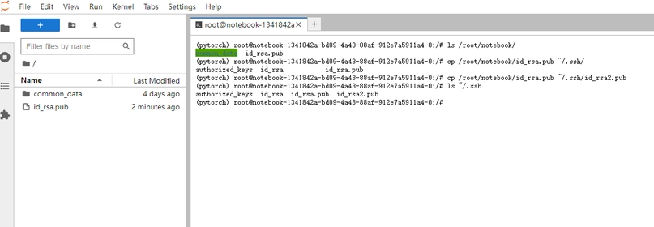
5 VS Code 远程开发¶
基于 remote-ssh （直接在服务器端编辑， 方便调试）， 和 基于 sftp同步（文件在本地）
5.1 基于remote-ssh的远程开发¶
(1) 搜索并安装 Remote Development
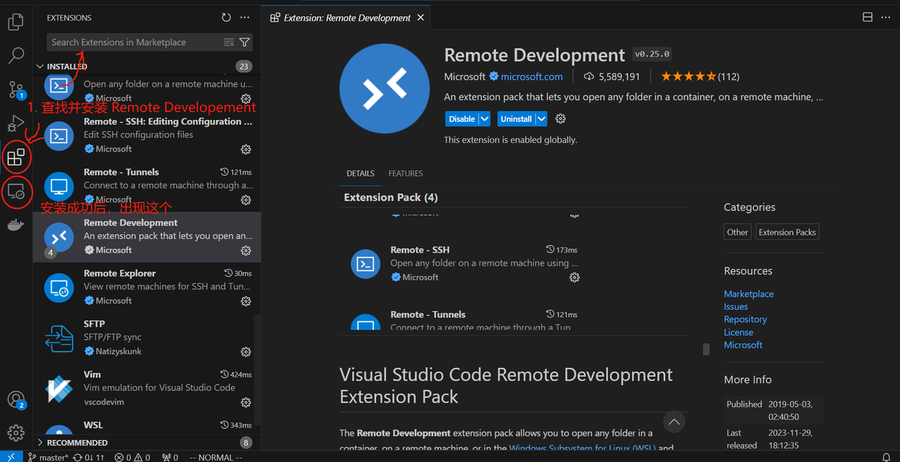
(2) 配置 ssh 地址 1）获取 ssh 地址 点击复制， 得到的格式大概是 ssh root@12.34.56.78 -p 910
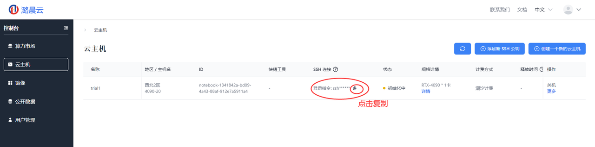
2）点击添加
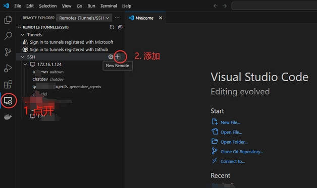
3）粘贴地址
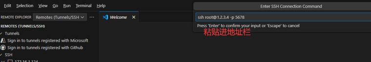
Config 使用 主目录 （Windows下 你的用户主目录 在 C:\Users\用户名\， 同上文）
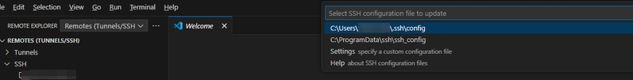
添加成功后会增加一行新的
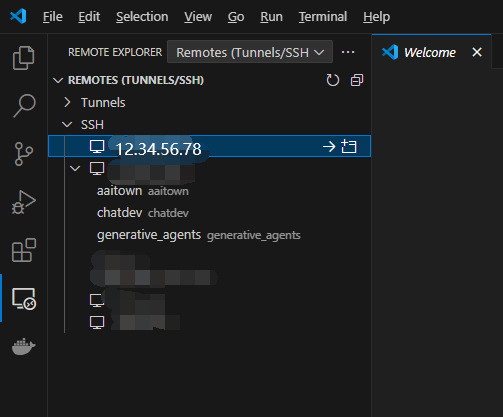
4） id_rsa too open， bad permissions. (windows 可能存在 问题） https://stackoverflow.com/questions/48888365/openssh-using-private-key-on-windows-unprotected-private-key-file-error
打开 command prompt 或 PowerShell 运行能看到报错信息
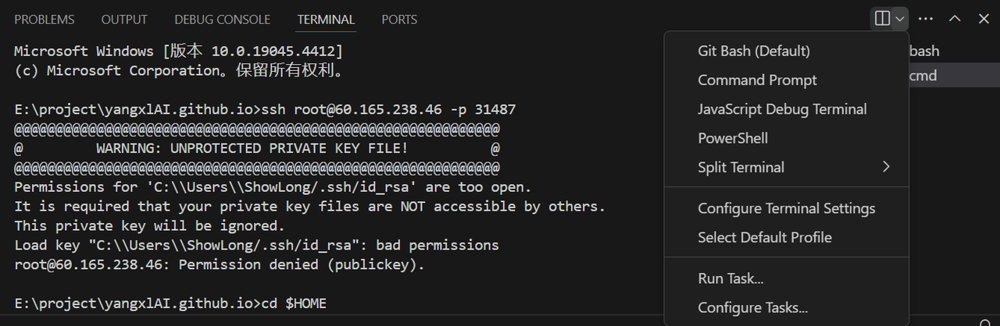
Command prompt 输入(PowerShell 略有不同，见链接）:
cd C:\Users\用户名\.ssh
C: # command prompt的特点， 专门切换盘符
icacls .\id_rsa /inheritance:r
icacls .\id_rsa /grant:r "%username%":"(R)"
（3）打开指定目录，即可， 潞晨云应该是 /root/notebook
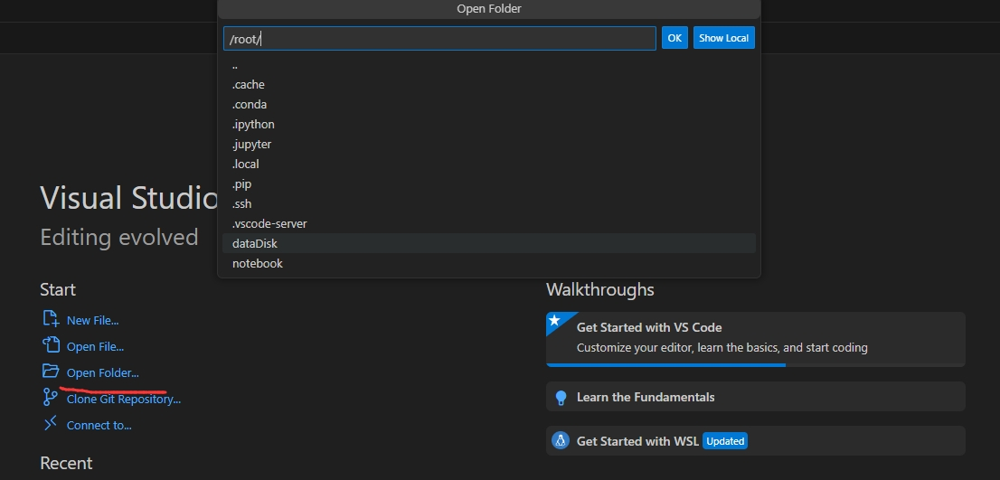
（4） 调试 编写任意代码文件， 比如编写python文件时， （会提示）安装 Python 插件（有些网络不好， 安装老半天不成功）
5.2 基于 sftp同步 （本地开发，同步服务器）¶
优点， 本地有代码， 缺点， 不能调试（得靠5.1的方法） —— 5.3 用pycharm， 但好像会把远程环境下载到本地（初始化很慢）， 且需要学生的教育邮箱。
打开本地项目， 安装 sftp 插件， ctrl-shift-p 输入 SFTP:Config， 该操作 等价于创建 .vscode/sftp.json 文件， 填写相关字段， uploadOnSave 习惯设置为True。
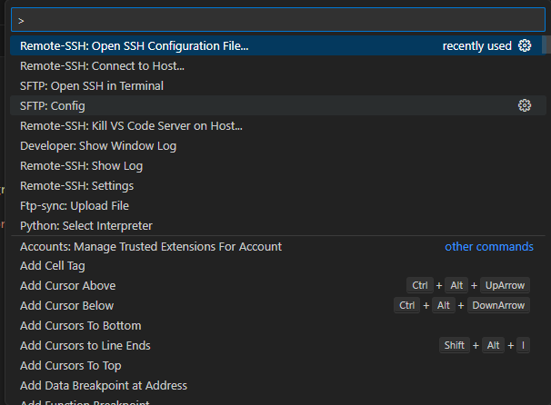
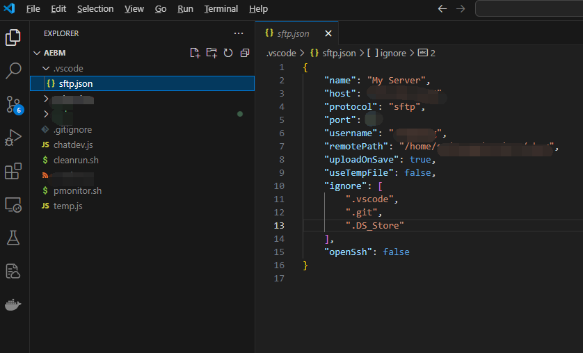
可右键上传下载
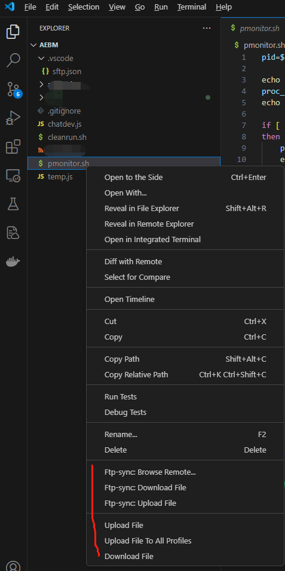
6. VS Code 连接 远程服务器上的 Jupyter notebook¶
6.1 打开远程jupyter notebook¶
在5.1 配置成功后， 在VS Code中创建新的 jupyter notebook 文件，即 .ipynb文件。 初次使用时， 右上角点击 选择核心 select kernel， VS Code会自动提示是否安装插件， 选择安装Python和Jupyter， 安装成功后，即可开始使用。
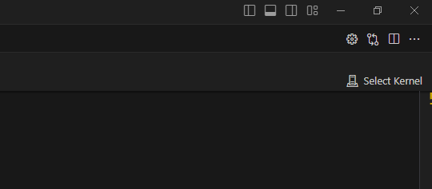
6.2 本地代码连接远程¶
需要在终端运行一个新的 jupyter notebook --ip 0.0.0.0 --port 8889 --allow-root
（例如）服务器上运行得到： http://127.0.0.1:8889/tree?token=b6ffa4376c70f992839a1f70ca7480ddfb7e0698b50f4cce
在本地电脑使用ssh命令创建隧道（如下）， 即可在浏览器直接打开进行编辑（文件在远程）或在VS Code中连接远程（代码在本地，如下图）
Plain Text
ssh -N -L 8889:localhost:8889 root@12.34.56.78
// 说明 本地端口：服务器地址：服务器端口 服务器用户名：IP
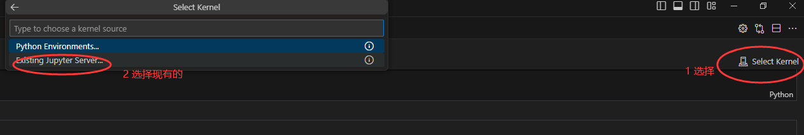
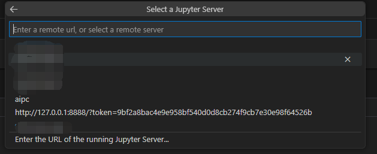
7 结束¶
其他平台类似
AutoDL 参考 https://www.autodl.com/docs/vscode/
潞晨云参考 https://cloud.luchentech.com/doc/docs/examples/llama